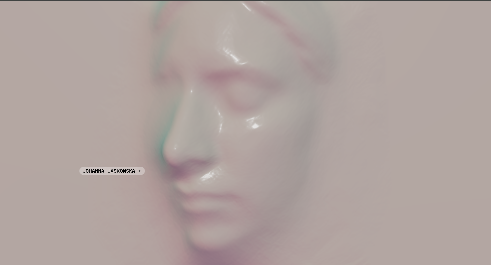
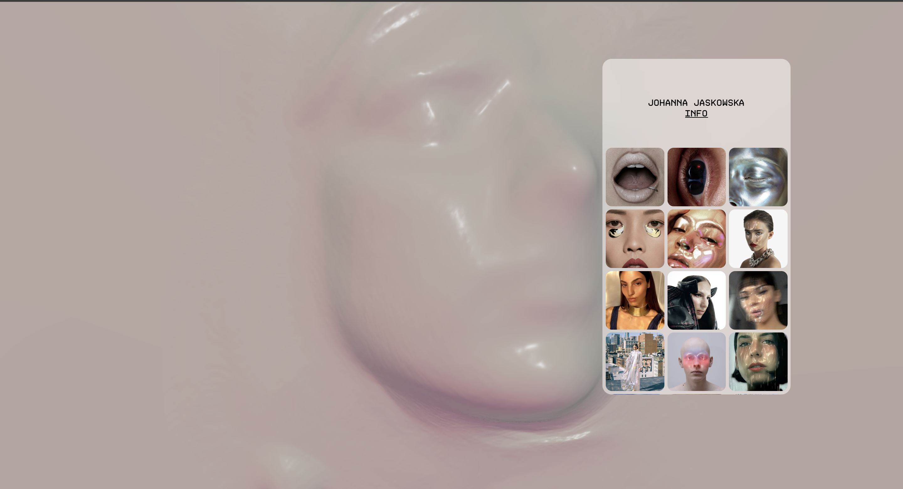
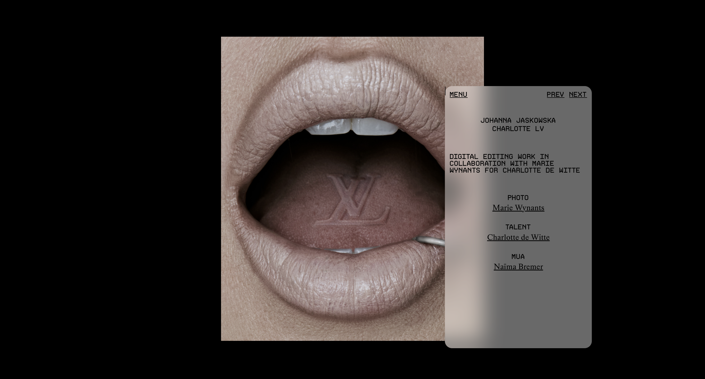
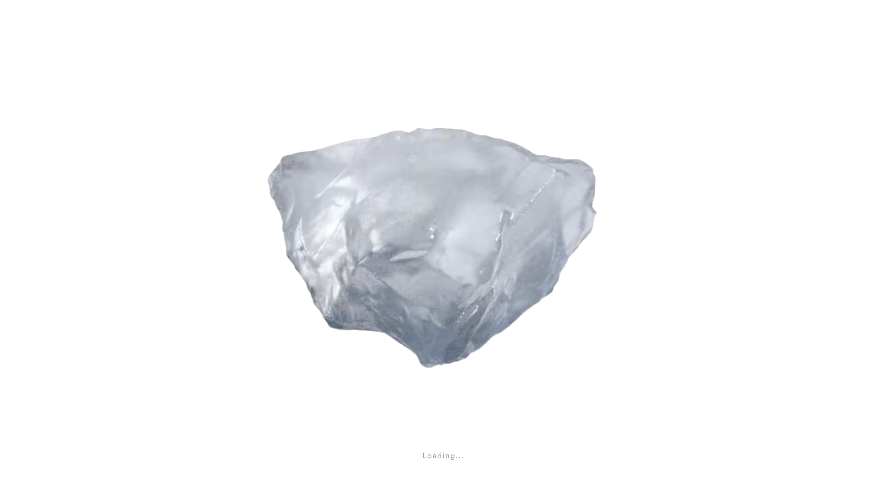
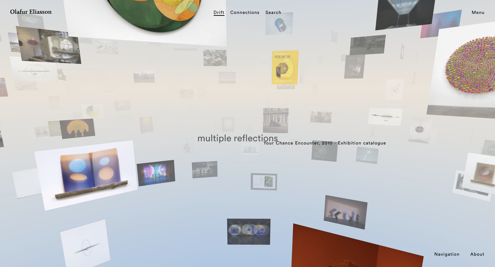
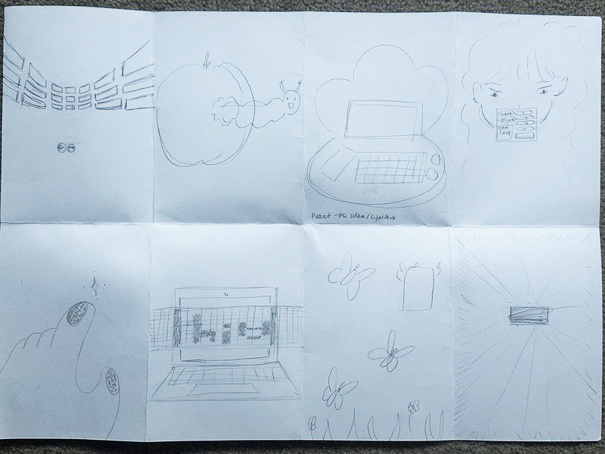
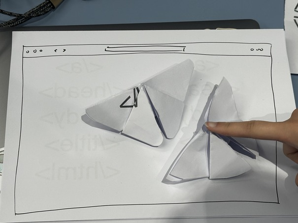
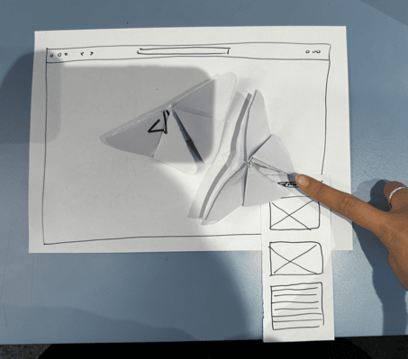

*****************************************
*****************************************
*****************************************

This kinda freaked me out when I first saw it. But I was surprised as to how fast it loaded, considering that it uses high-quality graphics (although it's definitely slower than your average site).

Clicking on the site brings this pop-up, showing all of Johanna Jaskowska's work.

When you click on one of the projects, the background changes to that site and shows information regarding it.

The loading animation that pops up before you go into Olafur Eliasson's portfolio.

Clicking on the site brings this pop-up, showing all of 3D gallery of Olafur Eliasson's work.
*****************************************
*****************************************
*****************************************

- What each square represents -
| "Spatial gallery" — an interactive gallery | A caterpillar popping out of an apple with each ring as a menu item | A 3D visual of a 'cyberdeck' within a shell | Similar to Johanna Jaskowska's work, where there would be a girl in the background eyeing around the menu, except you can drag it around |
| A hand that's been dithered, reaching towards a ascii star | A picture of a laptop that'll turn pixelated when passed through a row that makes everything underneath pixelated | 3D butterflies flying around, when you click one of them, it turns into a menu | A white space reaching towards a black box that's all dithering and scaterring, reminiscant of Interstellar (2014) |
*****************************************
*****************************************
*****************************************

I was inspired by Johanna Jaskowska's website, and wanted to go off of the use of 3D and interactivity. This website would have 3D butterflies floating around, and nothing else, provoking you to click on it.

Once you clicked on it, a pop-up would appear with details regarding the project inside it, with pictures.